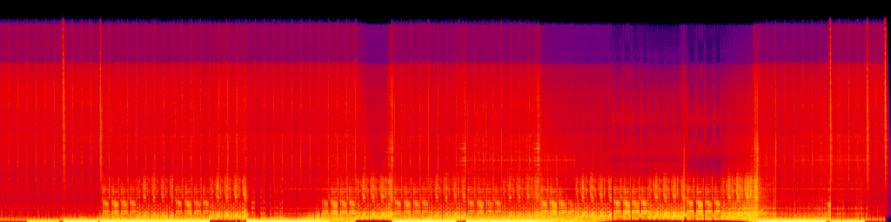

Juno (DE) - Que Rico (Brunello-Science Fiction- Barturker Edit).wav
BPM:
122
--.--
LUFS
PCM_S16LE
1411
kbps
44.1
kHz
Stereo
6:51
22 kHz
20 kHz
18 kHz
16 kHz
14 kHz
12 kHz
10 kHz
8 kHz
6 kHz
4 kHz
2 kHz
0

0 dB
-20 dB
-40 dB
-60 dB
-80 dB
-100 dB
0:00
0:41
1:22
2:03
2:44
3:25
4:06
4:47
5:28
6:09
6:51
Waveform
128kbps Preview
0:00 / 0:30